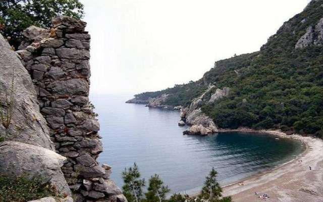
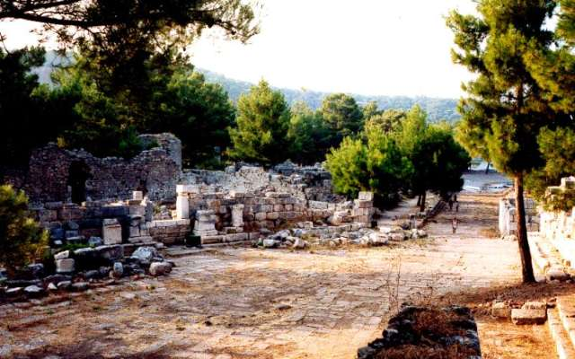

岩墓、吕基亚联盟的古城和碧蓝海湾。路线从费特希耶出发，沿海岸向东至安塔利亚，最好安排三天。
第 1 天

阿敏塔斯岩墓凿在费特希耶市中心上方的悬崖上，是吕基亚最壮观的岩墓之一。它属于古城特尔梅索斯，年代为公元前 4 世纪，仿照神庙立面，有两根爱奥尼亚式石柱和山墙；铭文中提到了阿敏塔斯的名字。沿台阶即可到达，可以俯瞰费特希耶湾的全景，尤其是在日落时分，石头会染上金色。

卡亚柯伊位于费特希耶附近，是一座由散布在山坡上的数百座石屋组成的废弃小镇。它曾名莱维西，在古城卡尔米拉索斯附近发展起来，直到 20 世纪初主要居住着希腊东正教居民。1923 年人口交换后人去楼空，后又遭地震破坏，那些没有屋顶的房屋、教堂和泉亭诉说着近代史上令人动容的一章，如今也被视为和平与友谊的象征。一条步道可下行至厄吕代尼兹。

特洛斯位于费特希耶附近，坐落在俯瞰克桑索斯河谷的高崖上，被认为是最古老、最大的吕基亚城市之一，起源可能在青铜时代。卫城山坡上的岩墓中，有一座刻有英雄柏勒洛丰骑着飞马珀伽索斯的浮雕，山顶则有一座奥斯曼时期的城堡。剧场、体育场、浴场和集市也保存了下来，附近就是萨克勒肯特峡谷。

皮纳拉位于费特希耶附近，是一座吕基亚城市，背靠一面布满数百个墓口的巨大岩壁。作为吕基亚联盟的重要成员，最引人注目的是高高凿在悬崖上、看似无法企及的墓室。下方有剧场、音乐厅、集市、神庙遗迹和饰有浮雕的王陵，坐落在松林之中，远离人潮。
第 2 天

莱顿位于克桑索斯附近，是吕基亚联盟最重要的圣所。供奉勒托及其子女阿波罗和阿耳忒弥斯的三座神庙并排而立；传说勒托曾在此避难。一块用吕基亚文、希腊文和阿拉姆文刻写的三语铭文，对破译吕基亚文起到了重要作用。1988 年与克桑索斯一同列入联合国教科文组织世界遗产名录；圣所内有剧场和部分积水的宁芙神殿，在青蛙和乌龟之间可以安静地参观。

克桑索斯是吕基亚最重要的城市，长期作为其行政中心。它坐落在埃申河谷上方的山坡上，以热爱自由的居民而闻名：古代文献记载，克桑索斯人曾两次宁可焚城也不投降。游客可以看到吕基亚独有的柱墓，包括“哈耳庇厄纪念碑”和刻有已知最长吕基亚文字的铭文柱。一些纪念建筑，如“涅瑞伊得斯纪念碑”，在 19 世纪被运往国外。1988…

帕塔拉曾是吕基亚最重要的港口之一，就在绵延数公里、以沙丘为背景的著名海滩后面。最引人注目的建筑是吕基亚联盟代表们开会的议事厅；经过精心修复，它常被视为代议制政府的早期范例。罗马灯塔、宏伟的城门、剧场和主街道展示了帕塔拉的富庶。这里被认为是圣尼古拉斯的出生地，海滩还是受保护海龟的筑巢地，因此晚间关闭。

吕基亚文明博物馆设在米拉古港安德里亚卡一座经修复的粮仓里，这座粮仓建于哈德良皇帝时期，见证了安德里亚卡在罗马粮食贸易中的地位。博物馆全面展示了吕基亚文明，从吕基亚联盟的政治制度、吕基亚文字铭文到丧葬习俗和日常生活。周围还有集市、大型蓄水池、浴场以及生产著名紫色染料的作坊遗迹。
第 3 天

米拉是吕基亚最震撼人心的城市之一，以代姆雷平原边缘悬崖上凿出的岩墓闻名。墓的立面模仿木屋，仿佛木屋化作了石头，层层叠叠地布满岩壁，令人叹为观止。崖下有一座大型罗马剧场，舞台建筑的雕刻残件散落其间。米拉在基督教史上也很重要：圣尼古拉斯曾在此任主教，其港口安德里亚卡是罗马粮食贸易的重要中转站。建议早到，空气凉爽，光线也好。

位于代姆雷的圣尼古拉斯纪念博物馆，是一座以圣尼古拉斯命名的教堂——他正是圣诞老人形象的原型。尼古拉斯在 4…

利米拉位于菲尼凯附近，是一座迷人的吕基亚古城，来自托罗斯山脉的泉水在遗迹间流淌。公元前 4 世纪，它是吕基亚统治者伯里克利的都城，卫城山坡上的英雄祠尤为著名，其浮雕现藏于安塔利亚博物馆。众多岩墓、罗马剧场和拜占庭建筑丰富了这处遗址；奥古斯都的外孙盖乌斯·恺撒在此去世，并被立碑纪念。水渠中游弋的乌龟，使这里成为吕基亚最宁静的遗址之一。

奥林波斯是一座浪漫的古城，坐落在贝伊山与大海相接处一条溪流的两岸，掩映在松树和月桂之间。作为吕基亚联盟的重要成员，这里既有从森林中显现的遗迹，又有溪流入海处的长长海滩。游客可以漫步经过爬满常春藤的墓葬、神庙大门、浴场和拜占庭建筑。附近的亚纳尔塔什，岩石间千百年来燃烧不息的天然火焰，催生了柏勒洛丰与喷火怪兽喀迈拉的神话。

法塞利斯位于凯梅尔附近，坐落在松林与大海相接的小半岛上，以三座港口闻名。相传它由罗得岛的殖民者建立，靠海上贸易致富；亚历山大大帝东征时曾在这里度过一个冬天。连接各港口的主街、仍然矗立的引水渠、剧场和浴场都可在林荫中游览——之后还可以在清澈的海湾里游泳。
按天安排的现成路线，帮助您规划行程。时间仅供参考；出发前请确认开放时间和路况。